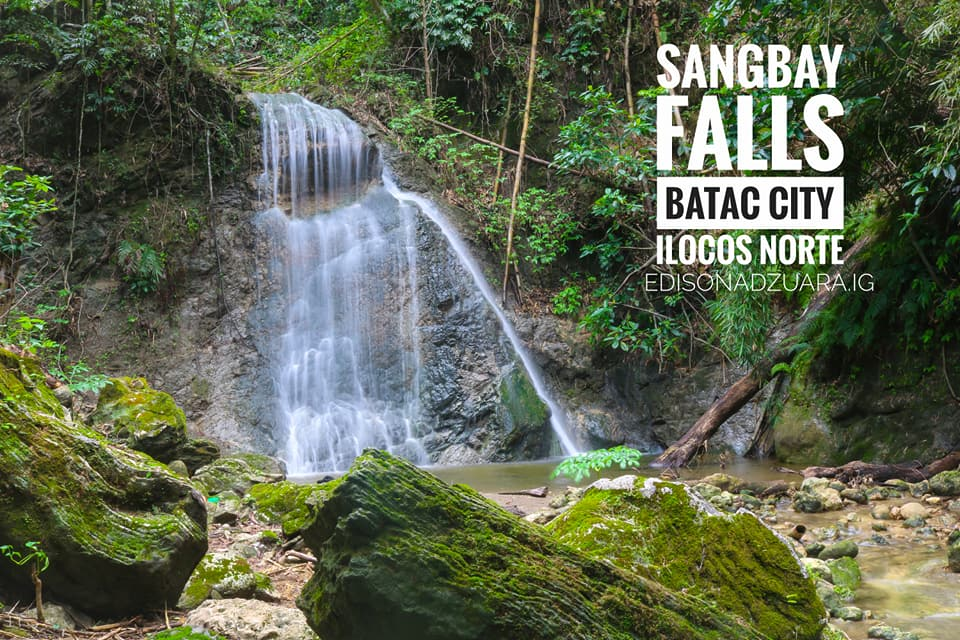

Sangbay Falls: The Hidden Gem of Batac City
Sangbay Falls, nestled in the heart of Barangay Maipalig, Batac City, Ilocos Norte, is a breathtaking natural wonder that offers a refreshing escape from the hustle and bustle of daily life. Surrounded by lush greenery and towering rock formations, the falls cascade gracefully into a serene pool, creating a tranquil atmosphere perfect for relaxation and adventure. The journey to this hidden gem involves a scenic hike, allowing visitors to immerse themselves in the beauty of nature. Whether you're looking to take a refreshing dip in its cool waters, capture stunning photos, or simply unwind in a peaceful setting, Sangbay Falls promises an unforgettable experience for nature lovers and adventure seekers alike.
SANGBAY FALLS BATAC
A Refreshing Oasis Nestled in Batac’s Wilderness
Sangbay Falls is a hidden gem located in Barangay Maipalig, Batac City, Ilocos Norte. This picturesque waterfall offers visitors a serene environment, making it an ideal spot for nature lovers and those seeking tranquility. The falls are surrounded by lush greenery, providing a refreshing escape from the hustle and bustle of city life. To reach Sangbay Falls, visitors typically embark on a short hike from the barangay, which allows them to immerse themselves in the natural beauty of the area. The trail leading to the falls is relatively easy, making it accessible for hikers of all skill levels.